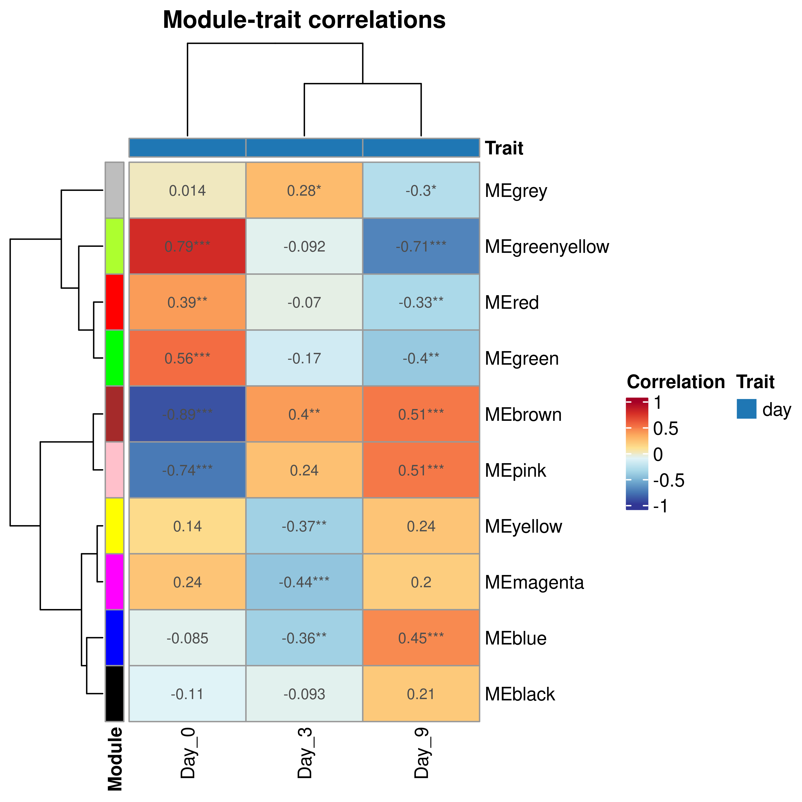
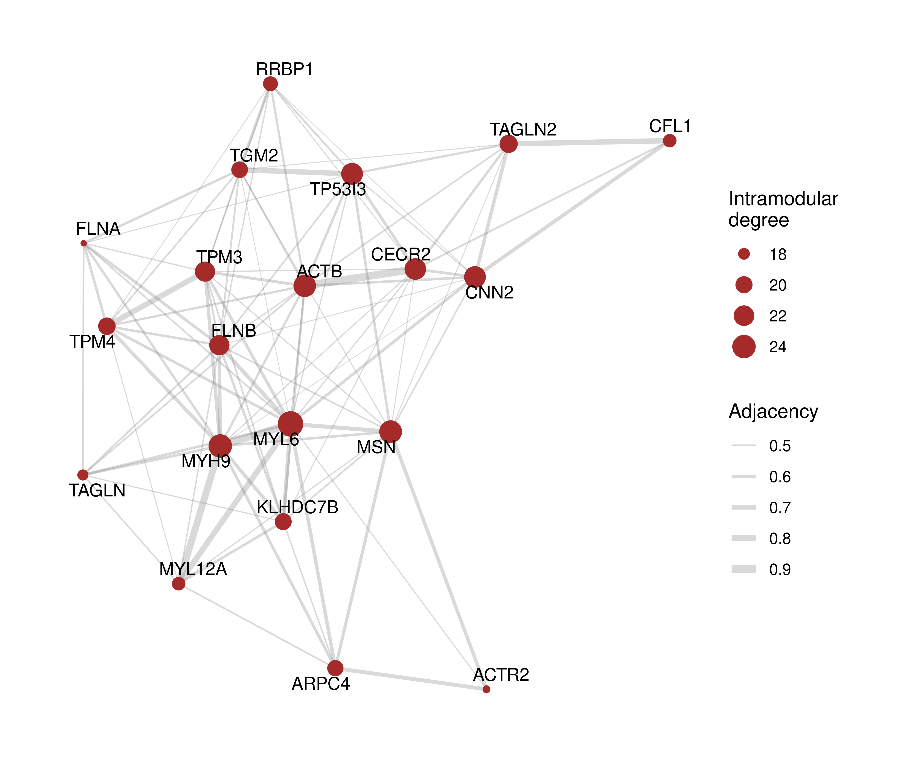

library(here)
library(GraphExperiment)
library(scpdata)
library(QFeatures)
library(BioNERO)
library(bluster)
library(tidyverse)
library(ggraph)
set.seed(123) # for reproducibility2 Use case 2: protein co-abundance networks from single-cell proteomics
Here, we will use GraphExperiment to store a protein co-abundance network inferred from mass spectrometry-based single-cell proteomics (SCP) data. Co-abundance networks are typically inferred with the WGCNA algorithm (Langfelder and Horvath 2008), which has been widely used in large-scale proteomics studies (Johnson et al. 2022; Seyfried et al. 2017), because soft-thresholding and topological overlap-based module detection are more robust than simple correlation thresholds.
We will use the data set from Khan et al. (2024), available in the scpdata package (Vanderaa and Gatto 2023b), which contains SCP data for 421 MCF-10A cells undergoing epithelial-mesenchymal transition (EMT) triggered by TGF-\(\beta\), with cells collected at days 0, 3, and 9.
SCP data (as scRNA-seq data) are very sparse, which deflates correlations and makes co-abundance network inference unreliable. A common approach to handle sparsity is to aggregate similar cells into metacells before network inference (Morabito et al. 2023), which is what we will do here.
2.1 Data description
The data are stored in a QFeatures object (Gatto and Vanderaa 2025) with quantitative data at the PSM, peptide, and protein levels. Here, we will only use the protein-level data, without imputation of missing values.
# Load data
qf <- khan2023()qfAn instance of class QFeatures (type: scp) with 47 sets:
[1] eSK233: SingleCellExperiment with 5951 rows and 16 columns
[2] eSK234: SingleCellExperiment with 6375 rows and 16 columns
[3] eSK235: SingleCellExperiment with 6261 rows and 16 columns
...
[45] peptides: SingleCellExperiment with 10055 rows and 421 columns
[46] proteins_imputed: SingleCellExperiment with 4096 rows and 421 columns
[47] proteins_unimputed: SingleCellExperiment with 4096 rows and 421 columns # Get protein-level data with sample metadata
prot <- getWithColData(qf, "proteins_unimputed")
rm(qf) # free memory
protclass: SingleCellExperiment
dim: 4096 421
metadata(0):
assays(1): ''
rownames(4096): A0A075B6I4 A0A0A0MS14 ... Q9Y6X9-2 W5XKT8-3
rowData names(1): protein
colnames(421): eSK234RI10 eSK239RI5 ... eSK238RI15 eSK238RI16
colData names(7): Set Channel ... sortday digest
reducedDimNames(0):
mainExpName: NULL
altExpNames(0):Let’s have a look at the available colData variables, and the proportion of missing values in our assay.
# Quick check on colData variables
colData(prot)DataFrame with 421 rows and 7 columns
Set Channel SampleAnnotation SampleType lcbatch
<character> <character> <character> <character> <character>
eSK234RI10 eSK234 RI10 d3 Day_3 A
eSK239RI5 eSK239 RI5 d0 Day_0 A
eSK239RI6 eSK239 RI6 d3 Day_3 A
eSK239RI7 eSK239 RI7 d3 Day_3 A
eSK239RI8 eSK239 RI8 d3 Day_3 A
... ... ... ... ... ...
eSK238RI11 eSK238 RI11 d9 Day_9 A
eSK238RI12 eSK238 RI12 d9 Day_9 A
eSK238RI13 eSK238 RI13 d9 Day_9 A
eSK238RI15 eSK238 RI15 d0 Day_0 A
eSK238RI16 eSK238 RI16 d0 Day_0 A
sortday digest
<character> <character>
eSK234RI10 B C
eSK239RI5 B C
eSK239RI6 B C
eSK239RI7 B C
eSK239RI8 B C
... ... ...
eSK238RI11 B C
eSK238RI12 B C
eSK238RI13 B C
eSK238RI15 B C
eSK238RI16 B Ctable(prot$SampleType)
Day_0 Day_3 Day_9
147 139 135 # Proportion of missing values
mean(is.na(assay(prot)))[1] 0.791287# Proportion of missing values in proteins that are missing in all cells of a TMT set
na_in_blocks <- sapply(split(colnames(prot), prot$Set), function(cells) {
na <- is.na(assay(prot)[, cells, drop = FALSE])
sum(rowSums(na) == length(cells)) * length(cells)
})
sum(na_in_blocks) / sum(is.na(assay(prot)))[1] 0.9817978About 80% of the values are missing, and nearly all missing values occur in proteins that are missing in all cells of a TMT set (i.e., an MS run). Thus, missingness is mostly determined by which peptides were selected for fragmentation and identified in each run, not by low abundances in individual cells (Vanderaa and Gatto 2023a). This has important implications for how we handle missing values. First, imputation methods that assume left-censored data (e.g., MinProb) are not suitable, as they would assign artificially low values to all cells of a set, creating spurious co-abundance among proteins that are missing in the same sets. This is aggravated by the fact that values are log-transformed relative abundances centered on each protein’s mean, so that low values do not indicate low absolute abundances. Second, the data must be corrected for batch effects (i.e., differences between TMT sets). Hence, following current recommendations for SCP data analysis (Vanderaa and Gatto 2023a, 2025), we will avoid imputation whenever possible, using methods that handle missing values directly.
Let’s add gene symbols to the rowData, since proteins are identified by UniProt accessions.
# Add gene symbols to `rowData`
acc <- sub("-.*", "", rownames(prot)) # remove isoform suffixes
rowData(prot)$symbol <- AnnotationDbi::mapIds(
org.Hs.eg.db::org.Hs.eg.db, keys = acc, keytype = "UNIPROT",
column = "SYMBOL", multiVals = "first"
)2.2 Aggregating cells into metacells
To create metacells, we will first remove differences between TMT sets with limma::removeBatchEffect() (Ritchie et al. 2015), while preserving differences between time points. Since limma fits linear models to each protein using only observed values, missing values are kept as they are. Then, we will identify groups of similar cells with a principal component analysis (PCA) using the NIPALS algorithm (as implemented in the nipals package (Wright 2026)), which handles missing values without imputation (Vanderaa and Gatto 2025). To avoid restricting the analysis to the most consistently detected (and, hence, highly abundant) proteins, we will use all proteins detected in at least 30% of the cells.
# Remove differences between TMT sets, preserving differences between days
mat <- limma::removeBatchEffect(
assay(prot), batch = prot$Set, design = model.matrix(~ prot$SampleType)
)
# PCA with NIPALS using proteins detected in at least 30% of the cells
na_prop <- rowMeans(is.na(mat))
sum(na_prop <= 0.7)[1] 876pca <- nipals::nipals(t(mat[na_prop <= 0.7, ]), ncomp = 10, scale = FALSE)
pcs <- pca$scores
# Proportion of variance in the top 3 PCs explained by days and TMT sets
sapply(c(day = "SampleType", set = "Set"), function(covariate) {
sapply(1:3, function(k) summary(lm(pcs[, k] ~ prot[[covariate]]))$r.squared)
}) day set
[1,] 0.77098150 0.043673608
[2,] 0.55986799 0.020346641
[3,] 0.03775828 0.002696338The top principal components reflect differences between time points, not between TMT sets. Now, we will cluster cells from each time point with k-means, aiming at ~7 cells per metacell, and average the abundances of cells in each metacell (ignoring missing values).
# Cluster cells within each time point into metacells
cells_by_day <- split(colnames(prot), prot$SampleType)
metacell <- unlist(lapply(names(cells_by_day), function(day) {
cells <- cells_by_day[[day]]
km <- kmeans(pcs[cells, ], centers = round(length(cells) / 7), nstart = 10)
setNames(paste0(day, "_mc", km$cluster), cells)
}))[colnames(prot)]
# Number of cells and TMT sets per metacell
summary(as.vector(table(metacell))) Min. 1st Qu. Median Mean 3rd Qu. Max.
1.000 4.000 6.000 7.017 10.000 16.000 summary(as.vector(tapply(prot$Set, metacell, function(s) length(unique(s))))) Min. 1st Qu. Median Mean 3rd Qu. Max.
1.000 4.000 6.000 6.283 9.000 14.000 # Average abundances in each metacell
mc_mat <- sapply(split(seq_along(metacell), metacell), function(i) {
rowMeans(mat[, i, drop = FALSE], na.rm = TRUE)
})
mc_mat[is.nan(mc_mat)] <- NA
dim(mc_mat)[1] 4096 60mean(is.na(mc_mat))[1] 0.5746053Since metacells contain cells from different TMT sets, aggregation substantially reduced the proportion of missing values. Let’s see how this affects correlations between proteins (using only proteins with few missing values, so that correlations can be estimated for cells).
# Distribution of absolute correlations for proteins with few missing values
p <- na_prop <= 0.1
cor_cells <- cor(t(mat[p, ]), use = "pairwise.complete.obs")
cor_mc <- cor(t(mc_mat[p, ]), use = "pairwise.complete.obs")
data.frame(
level = rep(c("Cells", "Metacells"), each = sum(upper.tri(cor_cells))),
abs_cor = abs(c(cor_cells[upper.tri(cor_cells)], cor_mc[upper.tri(cor_mc)]))
) |>
group_by(level) |>
summarise(mean = mean(abs_cor), median = median(abs_cor))# A tibble: 2 × 3
level mean median
<chr> <dbl> <dbl>
1 Cells 0.164 0.131
2 Metacells 0.273 0.240Absolute correlations increased substantially after aggregation, indicating that sparsity was masking co-abundance signals. For network inference, we will keep proteins detected in at least 80% of the metacells, as correlations estimated from few observations are unreliable. Since correlations in BioNERO are calculated from complete data, we will replace the remaining missing values (a small fraction) with protein means using BioNERO::replace_na(). Unlike left-censored imputation, mean imputation does not introduce artificial structure in the data, and it can only shrink correlations toward zero (i.e., it is conservative). Then, we will create a GraphExperiment object with metacells in columns, and store the mapping between cells and metacells in the metadata slot.
# Keep proteins detected in >=80% of the metacells and replace NAs
mc_mat <- mc_mat[rowMeans(is.na(mc_mat)) <= 0.2, ]
mean(is.na(mc_mat))[1] 0.04530142mc_mat <- BioNERO::replace_na(mc_mat, replaceby = "mean")
# Create metacell metadata
mc_md <- data.frame(
row.names = colnames(mc_mat),
day = sub("_mc.*", "", colnames(mc_mat)),
n_cells = as.vector(table(metacell)[colnames(mc_mat)])
)
# Create `GraphExperiment` object
ge <- GraphExperiment(
assays = list(abundance = mc_mat),
rowData = rowData(prot)[rownames(mc_mat), ],
colData = mc_md,
metadata = list(metacells = data.frame(cell = colnames(prot), metacell))
)
geclass: GraphExperiment
dim: 940 60
metadata(1): metacells
assays(1): abundance
rownames(940): A0A0U1RQI7 A1A4S6 ... Q9Y6N5 Q9Y6X9-2
rowData names(2): protein symbol
colnames(60): Day_0_mc1 Day_0_mc10 ... Day_9_mc8 Day_9_mc9
colData names(2): day n_cells
reducedDimNames(0):
mainExpName: NULL
altExpNames(0):
rowGraphs(0):
colGraphs(0):2.3 Inferring a protein co-abundance network
Now, we will infer a signed hybrid co-abundance network with BioNERO (Almeida-Silva and Venancio 2021). As in use case 1, we will store the full network (i.e., a complete weighted graph) in rowGraphs, with module assignments and intramodular degrees as node attributes.
# Get beta power
sft <- SFT_fit(ge, net_type = "signed hybrid", cor_method = "pearson") Power SFT.R.sq slope truncated.R.sq mean.k. median.k. max.k.
1 3 0.732 -1.16 0.964 13.5000 1.12e+01 44.50
2 4 0.868 -1.23 0.983 6.9200 4.90e+00 29.70
3 5 0.896 -1.25 0.972 4.0100 2.31e+00 21.20
4 6 0.916 -1.34 0.978 2.5300 1.15e+00 16.80
5 7 0.918 -1.35 0.982 1.7000 5.99e-01 13.60
6 8 0.929 -1.36 0.977 1.2000 3.27e-01 11.20
7 9 0.886 -1.38 0.908 0.8800 1.89e-01 9.32
8 10 0.909 -1.37 0.936 0.6640 1.11e-01 7.85
9 11 0.915 -1.33 0.935 0.5130 6.57e-02 6.67
10 12 0.876 -1.35 0.888 0.4050 3.95e-02 5.70
11 13 0.956 -1.28 0.975 0.3250 2.43e-02 4.91
12 14 0.964 -1.27 0.979 0.2650 1.49e-02 4.25
13 15 0.978 -1.22 0.985 0.2190 9.26e-03 3.69
14 16 0.973 -1.20 0.973 0.1820 5.86e-03 3.23
15 17 0.974 -1.18 0.969 0.1540 3.69e-03 2.83
16 18 0.974 -1.16 0.969 0.1300 2.32e-03 2.49
17 19 0.957 -1.15 0.945 0.1120 1.48e-03 2.20
18 20 0.962 -1.12 0.951 0.0964 9.59e-04 1.95sft$power[1] 4# Infer co-abundance network
net <- exp2gcn(
ge, net_type = "signed hybrid", SFTpower = sft$power,
cor_method = "pearson"
)..connectivity..
..matrix multiplication (system BLAS)..
..normalization..
..done.table(net$genes_and_modules$Modules)
black blue brown green greenyellow grey
64 30 126 45 166 249
magenta pink red yellow
89 75 56 40 # Create igraph object and add node attributes
g <- graph_from_adjacency_matrix(
net$adjacency_matrix, mode = "undirected", weighted = TRUE, diag = FALSE
)
modules <- setNames(net$genes_and_modules$Modules, net$genes_and_modules$Genes)
V(g)$module <- modules[V(g)$name]
V(g)$kWithin <- net$kIN[V(g)$name, "kWithin"]
rowGraph(ge, "wgcna") <- gWe will also add a kNN graph of metacells to the colGraphs slot, which can be used, for instance, to visualize or cluster metacells.
# Build kNN graph of metacells from top PCs
mc_pcs <- prcomp(t(assay(ge, "abundance")), rank. = 10)$x
g_mc <- makeKNNGraph(mc_pcs, k = 5)
V(g_mc)$name <- colnames(ge)
colGraph(ge, "metacell_knn") <- g_mc
geclass: GraphExperiment
dim: 940 60
metadata(1): metacells
assays(1): abundance
rownames(940): A0A0U1RQI7 A1A4S6 ... Q9Y6N5 Q9Y6X9-2
rowData names(4): protein symbol wgcna__module wgcna__kWithin
colnames(60): Day_0_mc1 Day_0_mc10 ... Day_9_mc8 Day_9_mc9
colData names(2): day n_cells
reducedDimNames(0):
mainExpName: NULL
altExpNames(0):
rowGraphs(1): wgcna
colGraphs(1): metacell_knn2.4 Exploring the co-abundance network
Module assignments are now available in rowData, and time points are in colData. Thus, we can easily identify modules associated with EMT stages by correlating module eigengenes with time points.
# Correlate module eigengenes with time points
me_trait <- module_trait_cor(ge, MEs = net$MEs, metadata_cols = "day")
plot_module_trait_cor(me_trait)
Let’s look at the top hub proteins of the module most negatively associated with day 0 (i.e., proteins with increased abundances along EMT).
# Get module most negatively correlated with day 0
emt_module <- me_trait |>
filter(trait == "Day_0") |>
slice_min(cor, n = 1) |>
pull(ME) |>
str_remove("^ME")
emt_module[1] "brown"# Top 20 proteins with the highest intramodular degree in this module
top_proteins <- rowData(ge) |>
as.data.frame() |>
rownames_to_column("accession") |>
filter(wgcna__module == emt_module) |>
slice_max(wgcna__kWithin, n = 20)
top_proteins$symbol [1] "MYL6" "MYH9" "MSN" "ACTB" "TP53I3" "CNN2" "CECR2"
[8] "FLNB" "TPM3" "TAGLN2" "TPM4" "KLHDC7B" "TGM2" "ARPC4"
[15] "RRBP1" "MYL12A" "CFL1" "TAGLN" "ACTR2" "FLNA" Top hubs include several proteins involved in actomyosin contractility and cytoskeletal remodeling (e.g., myosins, tropomyosins, filamins, and transgelins), a hallmark of the transition to a mesenchymal phenotype.
Finally, let’s visualize the top hubs of this module. Since rowGraph() adds rowData variables as node attributes, gene symbols are readily available for labeling.
# Subset object to keep top hubs and extract graph
g_hubs <- rowGraph(ge[top_proteins$accession, ], "wgcna")
# For visualization, keep only the strongest edges
g_hubs <- delete_edges(
g_hubs, which(E(g_hubs)$weight < quantile(E(g_hubs)$weight, 0.5))
)
ggraph(g_hubs, layout = "fr") +
geom_edge_link(aes(width = weight), alpha = 0.3, color = "grey50") +
geom_node_point(aes(size = kWithin), color = emt_module) +
geom_node_text(aes(label = symbol), repel = TRUE, size = 3.5) +
scale_edge_width(range = c(0.2, 2)) +
theme_graph(base_family = "sans") +
labs(size = "Intramodular\ndegree", edge_width = "Adjacency")
Session info
This document was created under the following conditions:
─ Session info ───────────────────────────────────────────────────────────────
setting value
version R version 4.5.2 (2025-10-31)
os Ubuntu 22.04.5 LTS
system x86_64, linux-gnu
ui X11
language (EN)
collate en_US.UTF-8
ctype en_US.UTF-8
tz Europe/Brussels
date 2026-10-24
pandoc 3.6.3 @ /opt/quarto/bin/tools/ (via rmarkdown)
quarto 1.8.25 @ /usr/local/bin/quarto
─ Packages ───────────────────────────────────────────────────────────────────
package * version date (UTC) lib source
abind 1.4-8 2024-09-12 [1] CRAN (R 4.5.2)
annotate 1.88.0 2025-10-29 [1] Bioconductor 3.22 (R 4.5.2)
AnnotationDbi 1.72.0 2025-10-29 [1] Bioconductor 3.22 (R 4.5.2)
AnnotationFilter 1.34.0 2025-10-29 [1] Bioconductor 3.22 (R 4.5.2)
AnnotationHub * 4.0.0 2025-10-29 [1] Bioconductor 3.22 (R 4.5.2)
backports 1.5.0 2024-05-23 [1] CRAN (R 4.5.2)
base64enc 0.1-3 2015-07-28 [1] CRAN (R 4.5.2)
Biobase * 2.70.0 2025-10-29 [1] Bioconductor 3.22 (R 4.5.2)
BiocBaseUtils 1.12.0 2025-10-29 [1] Bioconductor 3.22 (R 4.5.2)
BiocFileCache * 3.0.0 2025-10-29 [1] Bioconductor 3.22 (R 4.5.2)
BiocGenerics * 0.56.0 2025-10-29 [1] Bioconductor 3.22 (R 4.5.2)
BiocManager 1.30.27 2025-11-14 [1] CRAN (R 4.5.2)
BiocNeighbors 2.4.0 2025-10-29 [1] Bioconductor 3.22 (R 4.5.2)
BiocParallel 1.44.0 2025-10-29 [1] Bioconductor 3.22 (R 4.5.2)
BiocVersion 3.22.0 2025-10-07 [1] Bioconductor 3.22 (R 4.5.2)
BioNERO * 1.18.0 2025-10-29 [1] Bioconductor 3.22 (R 4.5.2)
Biostrings 2.78.0 2025-10-29 [1] Bioconductor 3.22 (R 4.5.2)
bit 4.6.0 2025-03-06 [1] CRAN (R 4.5.2)
bit64 4.6.0-1 2025-01-16 [1] CRAN (R 4.5.2)
blob 1.3.0 2026-01-14 [1] CRAN (R 4.5.2)
bluster * 1.20.0 2025-10-29 [1] Bioconductor 3.22 (R 4.5.2)
cachem 1.1.0 2024-05-16 [1] CRAN (R 4.5.2)
Cairo 1.7-0 2025-10-29 [1] CRAN (R 4.5.2)
checkmate 2.3.3 2025-08-18 [1] CRAN (R 4.5.2)
circlize 0.4.17 2025-12-08 [1] CRAN (R 4.5.2)
cli 3.6.5 2025-04-23 [1] CRAN (R 4.5.2)
clue 0.3-67 2026-02-18 [1] CRAN (R 4.5.2)
cluster 2.1.8.1 2025-03-12 [4] CRAN (R 4.4.3)
coda 0.19-4.1 2024-01-31 [1] CRAN (R 4.5.2)
codetools 0.2-19 2023-02-01 [4] CRAN (R 4.2.2)
colorspace 2.1-2 2025-09-22 [1] CRAN (R 4.5.2)
ComplexHeatmap 2.26.1 2026-02-03 [1] Bioconductor 3.22 (R 4.5.2)
crayon 1.5.3 2024-06-20 [1] CRAN (R 4.5.2)
curl 7.0.0 2025-08-19 [1] CRAN (R 4.5.2)
data.table 1.18.0 2025-12-24 [1] CRAN (R 4.5.2)
DBI 1.2.3 2024-06-02 [1] CRAN (R 4.5.2)
dbplyr * 2.5.1 2025-09-10 [1] CRAN (R 4.5.2)
DelayedArray 0.36.0 2025-10-29 [1] Bioconductor 3.22 (R 4.5.2)
dichromat 2.0-1 2026-07-22 [1] CRAN (R 4.5.2)
digest 0.6.39 2025-11-19 [1] CRAN (R 4.5.2)
doParallel 1.0.17 2022-02-07 [1] CRAN (R 4.5.2)
dplyr * 1.1.4 2023-11-17 [1] CRAN (R 4.5.2)
dynamicTreeCut 1.63-1 2016-03-11 [1] CRAN (R 4.5.2)
edgeR 4.8.2 2025-12-25 [1] Bioconductor 3.22 (R 4.5.2)
evaluate 1.0.5 2025-08-27 [1] CRAN (R 4.5.2)
ExperimentHub * 3.0.0 2025-10-29 [1] Bioconductor 3.22 (R 4.5.2)
farver 2.1.2 2024-05-13 [1] CRAN (R 4.5.2)
fastcluster 1.3.0 2025-05-07 [1] CRAN (R 4.5.2)
fastmap 1.2.0 2024-05-15 [1] CRAN (R 4.5.2)
filelock 1.0.3 2023-12-11 [1] CRAN (R 4.5.2)
forcats * 1.0.1 2025-09-25 [1] CRAN (R 4.5.2)
foreach 1.5.2 2022-02-02 [1] CRAN (R 4.5.2)
foreign 0.8-90 2025-03-31 [4] CRAN (R 4.4.3)
Formula 1.2-5 2023-02-24 [1] CRAN (R 4.5.2)
genefilter 1.92.0 2025-10-29 [1] Bioconductor 3.22 (R 4.5.2)
generics * 0.1.4 2025-05-09 [1] CRAN (R 4.5.2)
GENIE3 1.32.0 2025-10-29 [1] Bioconductor 3.22 (R 4.5.2)
GenomicRanges * 1.62.1 2025-12-08 [1] Bioconductor 3.22 (R 4.5.2)
GetoptLong 1.1.0 2025-11-28 [1] CRAN (R 4.5.2)
ggdendro 0.2.0 2024-02-23 [1] CRAN (R 4.5.2)
ggforce 0.5.0 2025-06-18 [1] CRAN (R 4.5.2)
ggnetwork 0.5.14 2025-09-10 [1] CRAN (R 4.5.2)
ggplot2 * 4.0.1 2025-11-14 [1] CRAN (R 4.5.2)
ggraph * 2.2.2 2025-08-24 [1] CRAN (R 4.5.2)
ggrepel 0.9.6 2024-09-07 [1] CRAN (R 4.5.2)
GlobalOptions 0.1.3 2025-11-28 [1] CRAN (R 4.5.2)
glue 1.8.0 2024-09-30 [1] CRAN (R 4.5.2)
GraphExperiment * 1.1.2 2026-09-08 [1] Bioconductor
graphlayouts 1.2.3 2026-02-21 [1] CRAN (R 4.5.2)
gridExtra 2.3 2017-09-09 [1] CRAN (R 4.5.2)
gtable 0.3.6 2024-10-25 [1] CRAN (R 4.5.2)
here * 1.0.2 2025-09-15 [1] CRAN (R 4.5.2)
Hmisc 5.2-5 2026-01-09 [1] CRAN (R 4.5.2)
hms 1.1.4 2025-10-17 [1] CRAN (R 4.5.2)
htmlTable 2.4.3 2024-07-21 [1] CRAN (R 4.5.2)
htmltools 0.5.9 2025-12-04 [1] CRAN (R 4.5.2)
htmlwidgets 1.6.4 2023-12-06 [1] CRAN (R 4.5.2)
httr 1.4.7 2023-08-15 [1] CRAN (R 4.5.2)
httr2 1.2.2 2025-12-08 [1] CRAN (R 4.5.2)
igraph * 2.2.1 2025-10-27 [1] CRAN (R 4.5.2)
impute 1.84.0 2025-10-29 [1] Bioconductor 3.22 (R 4.5.2)
intergraph 2.0-4 2024-02-01 [1] CRAN (R 4.5.2)
IRanges * 2.44.0 2025-10-29 [1] Bioconductor 3.22 (R 4.5.2)
iterators 1.0.14 2022-02-05 [1] CRAN (R 4.5.2)
jsonlite 2.0.0 2025-03-27 [1] CRAN (R 4.5.2)
KEGGREST 1.50.0 2025-10-29 [1] Bioconductor 3.22 (R 4.5.2)
knitr 1.51 2025-12-20 [1] CRAN (R 4.5.2)
labeling 0.4.3 2023-08-29 [1] CRAN (R 4.5.2)
lattice 0.22-5 2023-10-24 [4] CRAN (R 4.3.1)
lazyeval 0.2.2 2019-03-15 [1] CRAN (R 4.5.2)
lifecycle 1.0.5 2026-01-08 [1] CRAN (R 4.5.2)
limma 3.66.0 2025-10-29 [1] Bioconductor 3.22 (R 4.5.2)
locfit 1.5-9.12 2025-03-05 [1] CRAN (R 4.5.2)
lubridate * 1.9.4 2024-12-08 [1] CRAN (R 4.5.2)
magick 2.9.0 2025-09-08 [1] CRAN (R 4.5.2)
magrittr 2.0.4 2025-09-12 [1] CRAN (R 4.5.2)
MASS 7.3-65 2025-02-28 [4] CRAN (R 4.4.3)
Matrix 1.7-4 2025-08-28 [4] CRAN (R 4.5.1)
MatrixGenerics * 1.22.0 2025-10-29 [1] Bioconductor 3.22 (R 4.5.2)
matrixStats * 1.5.0 2025-01-07 [1] CRAN (R 4.5.2)
memoise 2.0.1 2021-11-26 [1] CRAN (R 4.5.2)
mgcv 1.9-4 2025-11-07 [4] CRAN (R 4.5.2)
minet 3.68.0 2025-10-29 [1] Bioconductor 3.22 (R 4.5.2)
MsCoreUtils 1.22.1 2025-11-27 [1] Bioconductor 3.22 (R 4.5.2)
MultiAssayExperiment * 1.36.2 2026-03-29 [1] Bioconductor 3.22 (R 4.5.2)
NetRep 1.2.10 2026-04-12 [1] CRAN (R 4.5.2)
network 1.20.0 2026-02-07 [1] CRAN (R 4.5.2)
nipals 1.2 2026-09-09 [1] CRAN (R 4.5.2)
nlme 3.1-168 2025-03-31 [4] CRAN (R 4.4.3)
nnet 7.3-20 2025-01-01 [4] CRAN (R 4.4.2)
org.Hs.eg.db 3.22.0 2026-10-21 [1] Bioconductor
otel 0.2.0 2025-08-29 [1] CRAN (R 4.5.2)
patchwork 1.3.2 2025-08-25 [1] CRAN (R 4.5.2)
pillar 1.11.1 2025-09-17 [1] CRAN (R 4.5.2)
pkgconfig 2.0.3 2019-09-22 [1] CRAN (R 4.5.2)
plyr 1.8.9 2023-10-02 [1] CRAN (R 4.5.2)
png 0.1-8 2022-11-29 [1] CRAN (R 4.5.2)
polyclip 1.10-7 2024-07-23 [1] CRAN (R 4.5.2)
preprocessCore 1.72.0 2025-10-29 [1] Bioconductor 3.22 (R 4.5.2)
ProtGenerics 1.42.0 2025-10-29 [1] Bioconductor 3.22 (R 4.5.2)
purrr * 1.2.1 2026-01-09 [1] CRAN (R 4.5.2)
QFeatures * 1.20.0 2025-10-29 [1] Bioconductor 3.22 (R 4.5.2)
R6 2.6.1 2025-02-15 [1] CRAN (R 4.5.2)
rappdirs 0.3.4 2026-01-17 [1] CRAN (R 4.5.2)
RColorBrewer 1.1-3 2022-04-03 [1] CRAN (R 4.5.2)
Rcpp 1.1.1 2026-01-10 [1] CRAN (R 4.5.2)
readr * 2.1.6 2025-11-14 [1] CRAN (R 4.5.2)
reshape2 1.4.5 2025-11-12 [1] CRAN (R 4.5.2)
RhpcBLASctl 0.23-42 2023-02-11 [1] CRAN (R 4.5.2)
rjson 0.2.23 2024-09-16 [1] CRAN (R 4.5.2)
rlang 1.1.7 2026-01-09 [1] CRAN (R 4.5.2)
rmarkdown 2.30 2025-09-28 [1] CRAN (R 4.5.2)
rpart 4.1.24 2025-01-07 [4] CRAN (R 4.4.2)
rprojroot 2.1.1 2025-08-26 [1] CRAN (R 4.5.2)
RSQLite 2.4.5 2025-11-30 [1] CRAN (R 4.5.2)
rstudioapi 0.18.0 2026-01-16 [1] CRAN (R 4.5.2)
S4Arrays 1.10.1 2025-12-01 [1] Bioconductor 3.22 (R 4.5.2)
S4Vectors * 0.48.0 2025-10-29 [1] Bioconductor 3.22 (R 4.5.2)
S7 0.2.1 2025-11-14 [1] CRAN (R 4.5.2)
scales 1.4.0 2025-04-24 [1] CRAN (R 4.5.2)
scpdata * 1.18.0 2025-11-04 [1] Bioconductor 3.22 (R 4.5.2)
Seqinfo * 1.0.0 2025-10-29 [1] Bioconductor 3.22 (R 4.5.2)
sessioninfo 1.2.3 2025-02-05 [1] CRAN (R 4.5.2)
shape 1.4.6.1 2024-02-23 [1] CRAN (R 4.5.2)
SingleCellExperiment * 1.32.0 2025-10-29 [1] Bioconductor 3.22 (R 4.5.2)
sna 2.8 2024-09-08 [1] CRAN (R 4.5.2)
SparseArray 1.10.8 2025-12-18 [1] Bioconductor 3.22 (R 4.5.2)
statmod 1.5.1 2025-10-09 [1] CRAN (R 4.5.2)
statnet.common 4.13.0 2025-12-16 [1] CRAN (R 4.5.2)
stringi 1.8.7 2025-03-27 [1] CRAN (R 4.5.2)
stringr * 1.6.0 2025-11-04 [1] CRAN (R 4.5.2)
SummarizedExperiment * 1.40.0 2025-10-29 [1] Bioconductor 3.22 (R 4.5.2)
survival 3.8-6 2026-01-16 [4] CRAN (R 4.5.2)
sva 3.58.0 2025-10-29 [1] Bioconductor 3.22 (R 4.5.2)
tibble * 3.3.1 2026-01-11 [1] CRAN (R 4.5.2)
tidygraph 1.3.1 2024-01-30 [1] CRAN (R 4.5.2)
tidyr * 1.3.2 2025-12-19 [1] CRAN (R 4.5.2)
tidyselect 1.2.1 2024-03-11 [1] CRAN (R 4.5.2)
tidyverse * 2.0.0 2023-02-22 [1] CRAN (R 4.5.2)
timechange 0.3.0 2024-01-18 [1] CRAN (R 4.5.2)
tweenr 2.0.3 2024-02-26 [1] CRAN (R 4.5.2)
tzdb 0.5.0 2025-03-15 [1] CRAN (R 4.5.2)
utf8 1.2.6 2025-06-08 [1] CRAN (R 4.5.2)
vctrs 0.7.1 2026-01-23 [1] CRAN (R 4.5.2)
viridis 0.6.5 2024-01-29 [1] CRAN (R 4.5.2)
viridisLite 0.4.2 2023-05-02 [1] CRAN (R 4.5.2)
WGCNA 1.74 2026-01-30 [1] CRAN (R 4.5.2)
withr 3.0.2 2024-10-28 [1] CRAN (R 4.5.2)
xfun 0.56 2026-01-18 [1] CRAN (R 4.5.2)
XML 3.99-0.20 2025-11-08 [1] CRAN (R 4.5.2)
xtable 1.8-4 2019-04-21 [1] CRAN (R 4.5.2)
XVector 0.50.0 2025-10-29 [1] Bioconductor 3.22 (R 4.5.2)
yaml 2.3.12 2025-12-10 [1] CRAN (R 4.5.2)
[1] /home/faalm/R/x86_64-pc-linux-gnu-library/4.5
[2] /usr/local/lib/R/site-library
[3] /usr/lib/R/site-library
[4] /usr/lib/R/library
* ── Packages attached to the search path.
──────────────────────────────────────────────────────────────────────────────